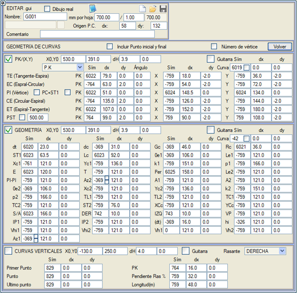
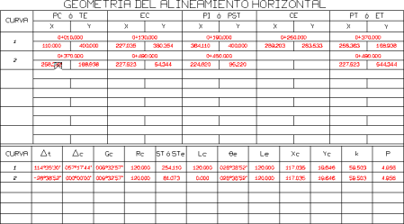
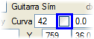
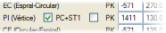
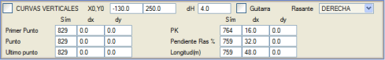
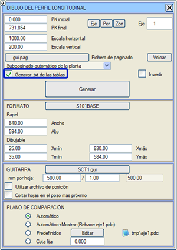

| |
|
BOYKESİT PAFTALARI İÇİN ŞABLONLAR: KURP GEOMETRİSİ
|
Bu bölümden, her paftaya karşılık gelen yatay kurpların parametrelerinin etiketlenmesi sağlanabilir: 
Bu parametreleri göstermenin iki olası yolu vardır:

Program kütüphanesinde yer alan SCT1.gui şablonu bu lejantı kullanır. Ayrıca, bu bilgi bandıyla birlikte kullanılmak üzere S101SCT1 formatı da dahildir. Örnek olarak çok kullanışlı başka bir şablon, Kolombiya kütüphanesinde yer alan COLOM_2.gui'dir.  Diyalog kutusu üç bölüme ayrılmıştır: biri karakteristik noktaların KM'lerinin veya Kazık Numaralarının ve koordinatlarının etiketlerinin konumuna (şeklin üst kısmı), diğeri kurpların geometri etiketlerinin konumuna (orta kısım) ve bir diğeri de düşey kurpların etiketlenmesine (alt kısım) aittir.
Diyalog kutusu üç bölüme ayrılmıştır: biri karakteristik noktaların KM'lerinin veya Kazık Numaralarının ve koordinatlarının etiketlerinin konumuna (şeklin üst kısmı), diğeri kurpların geometri etiketlerinin konumuna (orta kısım) ve bir diğeri de düşey kurpların etiketlenmesine (alt kısım) aittir.KM veya Kazık No ve Koordinat Verileri (X0, Y0) koordinatları verileri yerleştirmek için referans noktasıdır ve yatay ve dikey ötelemeler (dx ve dy) ona göre olacaktır. dH değerleri, her bir kurba karşılık gelen veri grupları arasındaki dikey veya yatay aralığı belirtir. Kurp numaraları belirtilen sembolle temsil edilir ve ilki, dx ve dy değerleriyle belirtilen orijine göreli konuma yerleştirilir. Kurp'ta belirtilen sembol tipi, kurp numarasını etiketlemek için kullanılacaktır. Eğer kurp numarası yerine some numarası etiketlenmek isteniyorsa, Some numarası seçeneğini etkinleştirmek gerekir. Bu durumda, 1. kurp 2. some olur, vb. Eğer Kurp kutucuğundaki ilgili kutuyu etkinleştirirsek, kurp numarası şu şekilde etiketlenir: 1000 x Güzergah Numarası + Kurp Numarası. Karakteristik noktaların KM'leri ve X, Y koordinatları, belirtilen sembol tipiyle (negatif değerler gösterilmemesine neden olur), orijine (X0, Y0) göre dx ve dy mesafeleriyle ve belirtilen açıyla temsil edilecektir. Some noktalarına karşılık gelen KM'ler durumunda, bunlar yalnızca bitişik kutucuk etkinleştirilirse köşe noktalarında etiketlenebilir. Ek olarak, Başlangıç ve bitiş noktasını dahil et seçeneği etkinleştirilerek güzergahın başlangıç ve bitiş noktalarını etiketlemek mümkündür. Bu seçenek etkinleştirildiğinde, ilk pafta için dikey aralığı belirten dH0 alanları görünür ve bu, başlangıç noktasını içerdiği için diğer paftalardan farklı olacaktır:
Eğer PI (Some) PC+ST1 kutucuğunu etkinleştirirsek, kurp başlangıcının kilometresi artı tanjant boyu değerini elde ederiz. Eğer bitişik kutucuğu etkinleştirirsek, kilometre sadece köşe noktalarında, yani dairesel kurpsuz aliyman-aliyman birleşim noktalarında etiketlenir. Kurpların geometri tablosuna, varsayılan olarak 500'ün katları olan Teğet Üzerindeki Noktaları veya PST'yi ekleme imkanı. Ancak bu değer değiştirilebilir. Meksika kütüphanesinde bu imkanı kullanan SCT1+PST.gui dosyası mevcuttur. Geometri Verileri Geometri verilerinin gösterimi tam olarak aynı şekilde çalışır. Dolayısıyla, bu veriler için bir koordinat başlangıcı (X0,Y0), kurplar arasında bir dikey ayrım dH ve her veri için sembol tipleri ve orijine olan mesafeler (negatif tipler gösterilmemesine neden olur) belirtmek gerekecektir. Gösterilebilecek veriler şunlardır:
Düşey Kurp Verileri 
Kurp geometri tablolarıyla ilişkili .txt listesi. Bu liste sadece boykesit ile çizilen değerleri yazdırır. 
|